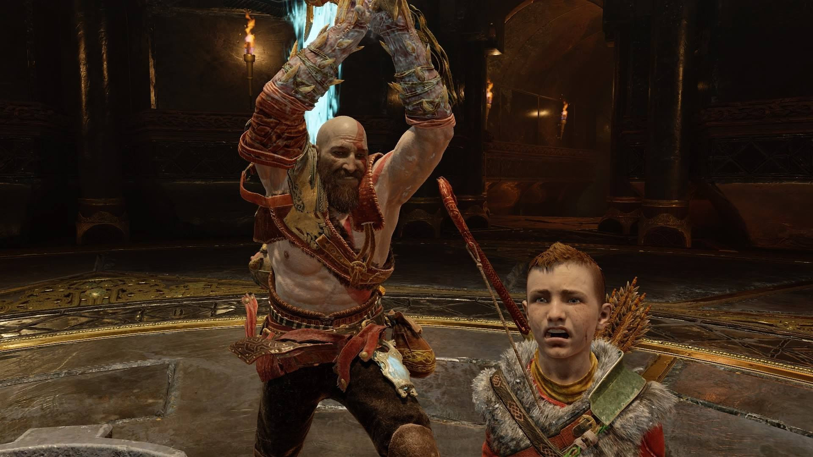

Разработка игр — это монументально комплексный процесс, который может задействовать сотни человек и занимать годы жизни. Более того, это не радостное приключение с улыбками и светом в глазах. Создание игр требует решать невероятное количество проблем, порой изобретая выходы, до которых пока никто не додумался.
Работа над God of War в студии Sony Santa Monica не была исключением из этого правила — команде пришлось пройти через плотные тернии, о которых мы узнали из документальной серии NoClip. Новое видео посвящено разработке PS4-эксклюзива God of War, в частности тому, как геймдиректор Кори Барлог управлял столь амбициозным проектом AAA-уровня.
Кори приводит в пример кинематограф, отмечая, что технологии предоставили режиссёрам новые возможности и инструменты повествования. Похожий процесс эволюции проходил в игровой индустрии — в качестве примера Барлог отметил The Last of Us. Игра Naughty Dog тронула миллионы геймеров по всему миру историей Элли и Джоэла.
Одним из ключевых испытаний в разработке God of War для Барлога и команды в целом стал поиск актёра на роль Кратоса. Для работы требовался человек, находящийся не только в отличной физической форме, но также способный исполнять роль бога Войны и работать с ребёнком.
Кори вспоминает опыт работы над второй частью God of War, когда актёры категорически отказывались работать над компьютерной игрой или просили $10 миллионов гонорара. К счастью для новой серии, Кристофер Джадж стал настоящим подарком, даже если актёр не знал ничего про God of War и полагал, что речь идёт о фильме.
Помните механику управления собакой в Dead to Rights? В этой игре хвостатый товарищ появлялся нажатием одной кнопки, которая отвечала за атаку или разоружение противника.
Такой же подход представлял себе Кори для управления Атреем на ранних стадиях разработки God of War. Однако в какой-то момент директор понял, что подобный метод контроля не передаёт отцовские чувства Кратоса по отношению к сыну.
Как можно передать отцовство через геймплей? Отец же не берёт управление ребёнком на себя в школе, он учит сына тому, как нужно себя вести и что нужно делать, именно это и показывают в игре. Просто вспомните начало, где вы учите Атрея стрелять по кабану, а затем он за всю игру практикуется и становится неплохим лучником. Это пример использования геймплея как художественного приёма, когда вы сами учите сына управлять луком, а затем радуетесь тому, что у него получилось попасть в кабана.
Ключевой проблемой God of War была её амбициозность и масштаб. Мы все прекрасно помним исполинских боссов третьей части, от которых было сложно отказаться при разработке новых приключений Кратоса. От множества схваток с боссами пришлось отказаться просто потому, что один бой требовал задействовать команду из 30 разработчиков и полтора года работы.
В студии пришлось собирать целый отдел, который отвечает исключительно за схватки с боссами. Также трудности возникли с троллями. На ранних стадиях разработки тролли не задумывались в качестве боссов, но получились настолько большими, что команда решила добавить полоску здоровья такую же, как у боссов.
Если сделать её над троллем, то игроков бы отвлекала необходимость смотреть на полосу сверху. В случае размещения шкалы под ногами, разработчики посчитали такую позицию несуразной и смешной. Компромиссом стало использование полоски здоровья, как у боссов — уже после каждого тролля обеспечили своей историей, тем более, что скандинавская мифология способствовала тому. Вот так из-за дизайна интерфейса тролли обрели свои небольшие предыстории.
Самой замечательной историей, которую Кори услышал от фанатов игры, была не та, как круто убивать врагов и крошить их в мелкое месиво, а та, где молодой человек подошёл к Кори и рассказал, что игра помогла ему понять своего отца.
Барлог рассказал, что впервые за долгое время геймер позвонил отцу и теперь они восстановили отношения благодаря God of War. Это оставило сильное впечатление на геймдиректоре — одно дело, когда создаёшь зубодробительный экшен с летающим топором, а другое — рассказать историю, способную дать ответы на серьёзные, жизненные вопросы.
Препятствия, трудности и поиски решения — это часть God of War. Всё это помогло возвысить игру, сделать её любимой для миллионов геймеров и тысяч критиков по всему миру.